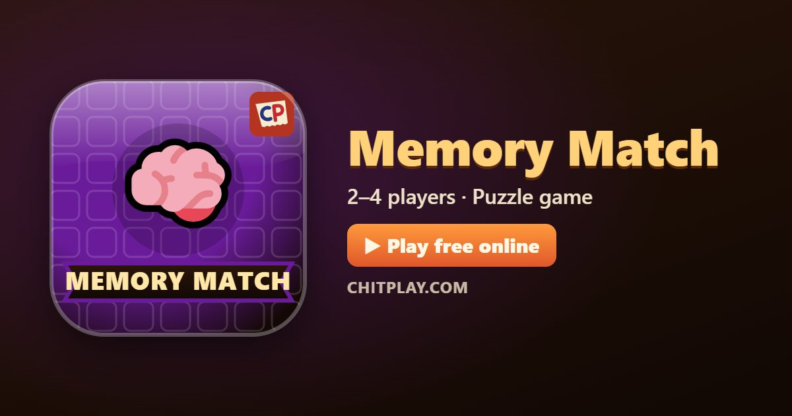

Memory Match: play free online and learn the rules
- 👥 2–4 players
- ⏱ 5–10 minutes
- 👤 guest play
- 🌍 online opponents
- 🤖 computer players
- 📶 friends nearby
- 🆓 free, no sign-up
Memory Match is the classic pairs game, and a real test of attention. Twenty-four tiles lie face down in twelve pairs. Everyone sees each tile that gets turned over, so the player who pays closest attention to everyone else's turns usually wins.

Ways to play Memory Match
- 👤 Guest play Start straight away against computer players, no account and no sign-up. Choose 2 to 4 players.
- 🌍 Play online Get matched with real players from around the world. If nobody is free within a few seconds, computer players take the empty seats so you are never left waiting.
- 📶 Friends nearby Open a room, and friends join from their own phones with a 6-digit code or by scanning a QR code. Works on the same Wi-Fi or across the internet.
- 📱 One phone Pass one phone around the table; secrets stay hidden until it is your turn.
- 👀 Watch Let the computer players show you how the game goes before you jump in.
How to play
- On your turn, tap two tiles to turn them over. All the players can see them.
- If they match, you keep the pair and go again.
- If they don't match, they turn back at the start of the next player's go, and the turn passes on.
Scoring
Each pair is worth one point.
Who wins
When every pair is found, the player with the most pairs wins. If all are level, it's a draw.
Tips
- Turn a tile you know second if you already know where its match is.
- Say what you see in your head: "moon, top left". Words stick better than pictures.
- Watch the other players' turns as closely as your own.
Questions
Do computer players cheat?
No. They only know the tiles that have been turned over, and they forget some of them too.
How many pairs are there?
Twelve pairs, on twenty-four tiles.
More games
Points in this game have no value. ChitPlay involves no real money, betting or prizes.